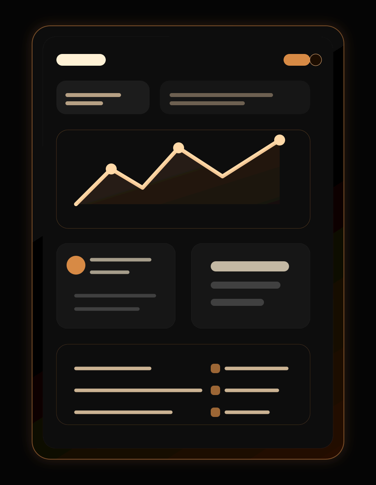
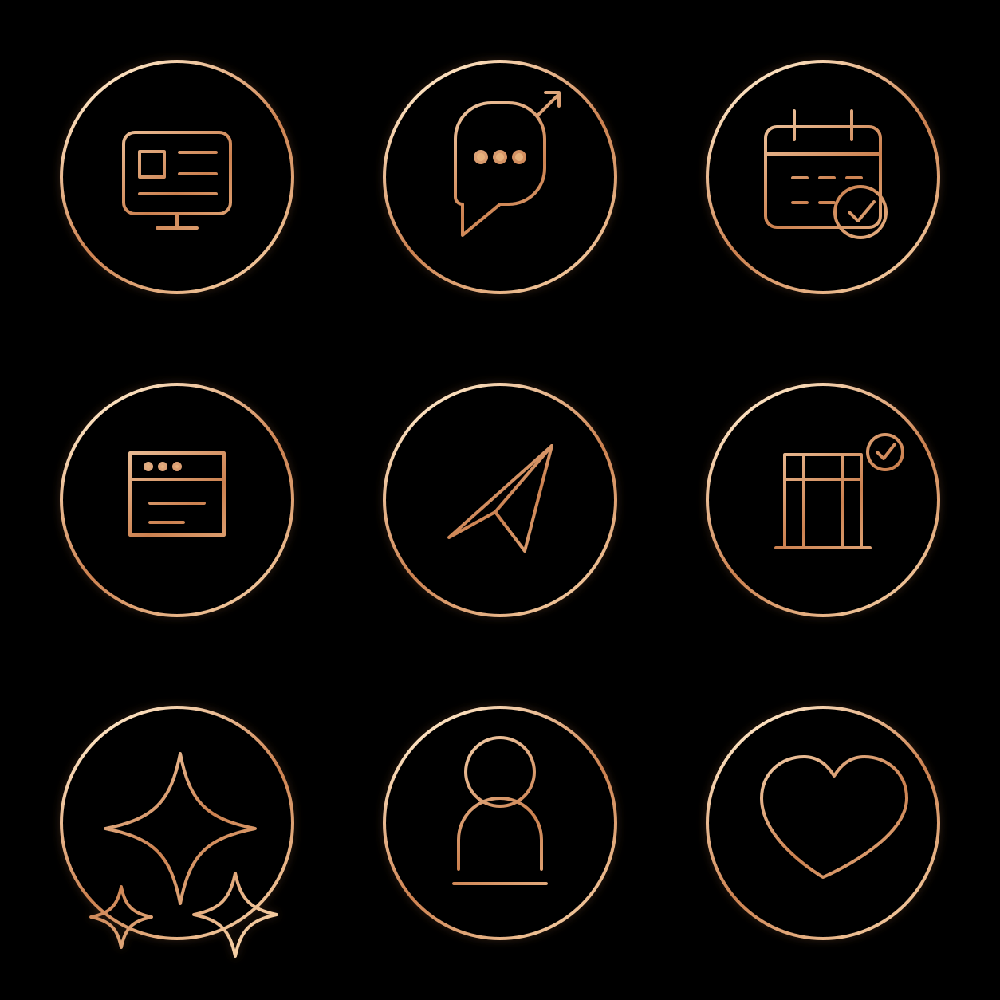

ЛЕНДИНГИ
БОТЫ
CRM
Собираю заявки в одну систему: страница продает, Telegram-бот отвечает, CRM держит записи под контролем.
Обсудить проектМЕНЬШЕ РУТИНЫ
ЧТО МОЖНО СОБРАТЬ
От одной продающей страницы до связки лендинг + Telegram-бот + CRM, где заявки не теряются в переписках.
Модуль
Что внутри
Зачем
Landing
Первый экран, оффер, услуги, кейсы, отзывы, кнопка Telegram и понятный путь к заявке
быстро упаковать продажу
Bot
Сценарии записи, ответы на частые вопросы, сбор контактов, напоминания и уведомления
разгрузить директ
CRM
Клиенты, даты, свободные окна, статусы, история заявок и контроль повторных обращений
видеть весь поток

ПОДДЕРЖКА И РАЗВИТИЕ
После запуска можно докручивать оффер, добавлять новые блоки, менять сценарии бота и держать CRM в актуальном виде.

Лендинг продает без лишней переписки
Оффер, услуги, кейсы, отзывы и кнопка Telegram собраны в одном премиальном интерфейсе.